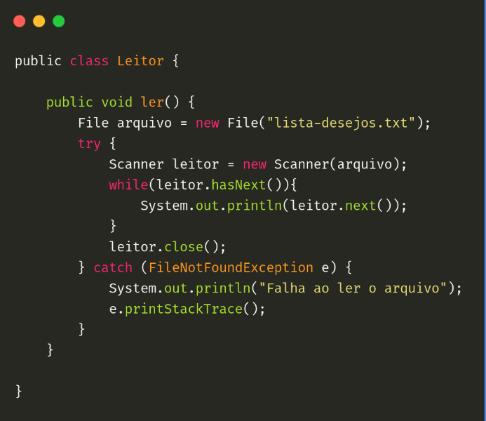

Kotlin (2011)
Kotlin é uma linguagem de programação moderna e de tipagem estática que roda na Java Virtual Machine (JVM) e também pode ser compilada para JavaScript ou para código nativo. Foi desenvolvida pela JetBrains em 2010.
Ela foi projetada para ser uma alternativa mais concisa e segura em relação ao Java. Ela oferece uma sintaxe mais limpa e expressiva, permitindo que os desenvolvedores escrevam código de forma mais concisa, sem perder a clareza e a legibilidade. Ela também se integra perfeitamente com o código Java existente, o que facilita a adoção gradual da linguagem em projetos já estabelecidos.

É uma linguagem de programação moderna, concisa e segura, que roda na JVM e pode ser compilada para JavaScript. Com sua sintaxe expressiva, recursos de programação funcional e integração com o ecossistema Java, Kotlin se tornou uma escolha popular para o desenvolvimento de aplicativos Android e para uma ampla gama de outros cenários de desenvolvimento.
Atividade desenvolvida como extensão no projeto
PACEX/Mundo Tech do curso de análise e Desenvolvimento de Sistemas
Unipar - Cascavel